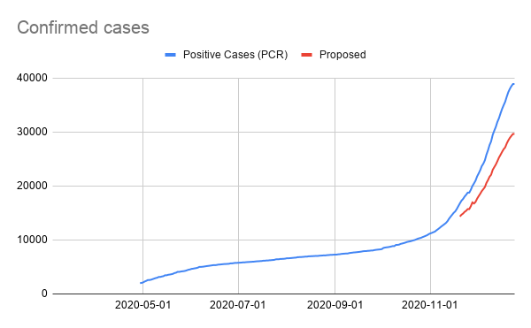
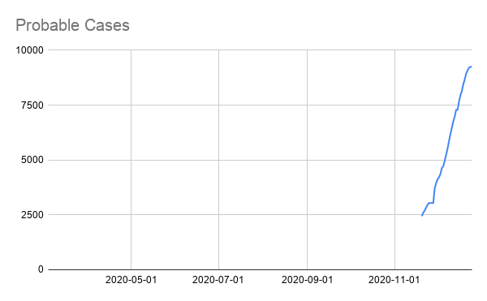

[NH] Correctly Capture Confirmed/Probable Breakdown for NH
Issue number 1027
karaschechtman opened this issue on December 26, 2020 at 10:29 am
Labels Data quality
State or US: NH
Describe the problem NH provides a breakdown between antigen and PCR confirmed cases that we captured starting 11/20 (see related issue #1028 for a backfill of days we didn’t capture) It’s clear that these antigens are revised down upon PCR confirmation because, until 12/13, NH provided the figures of individuals who were reclassified to PCR as a separate number. We currently capture the lumped numbers in Confirmed cases, the antigen numbers in positive antigen tests (people), and nothing in probable cases Start capturing PCR only as a confirmed number and antigen as a probable number and delete the antigen positive number since these are revised downward
Link to data source The PCR only number can be calculated by subtracting and cross checking with NH’s secondary screenshots to ensure this equals “PCR Positive” (12/13 onward) or the sum of “PCR Positive” + “PCR and Antigen Positive” (up to 12/13)
Comments
This also affects Negatives. Revising historical negatives to subtract the new confirmed cases from 11/20 Changes (9).txt


Before NH.xlsx
NH after.xlsx